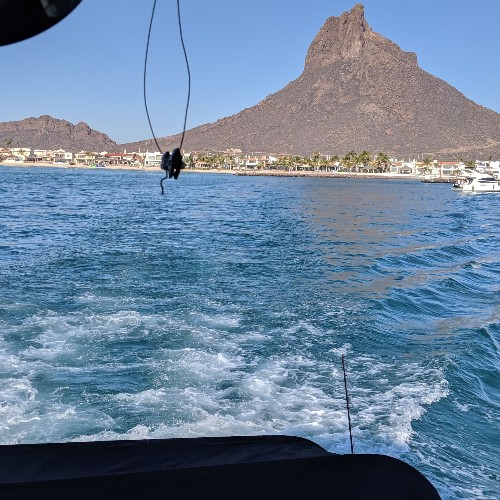
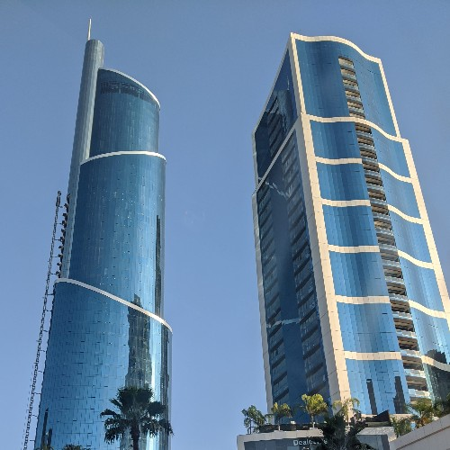
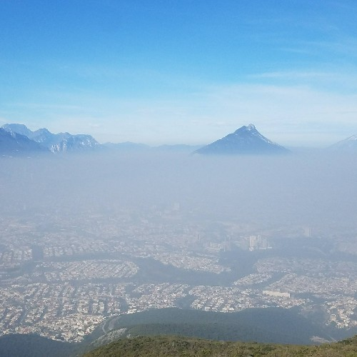
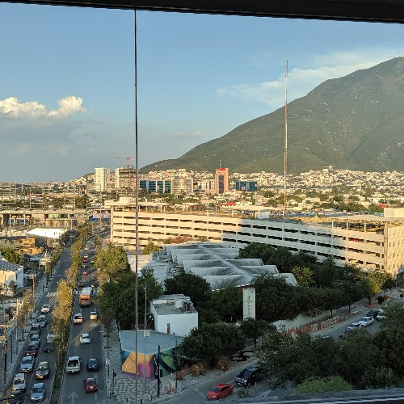
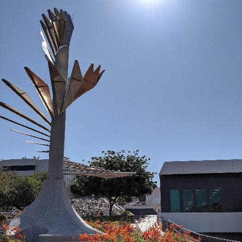
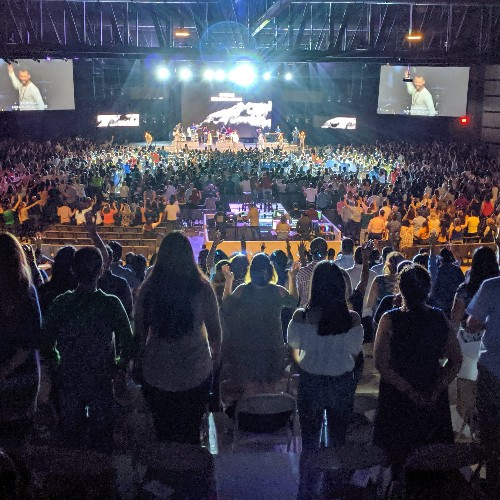

Since childhood I have been passionate about software development,
in middle school I was interested on learning how a computers works,
so I decided to enroll in an introduction to web development course,
that was a very satisfying experience and made me decide for more knowledge
in the field, hence in high school I enter to a software development program
where I learned many things, such as object-oriented programming, mobile app
development and database management.
For me, applying the knowledge to real life problems is the best way to
learn about something, hence why I started to make my first personal projects
on high school. I have worked in solutions for my classes, for example,
implementing C++ functions to evaluate physics functions.
The first project that I worked in, was a webpage for a local business, I worked on
the backend of the contact form and newsletter. Then I worked in a project of administration
of a mechanical workshop, there I developed it with databases and PHP. Also I worked on
a logistic platform for shipments in an industrial warehouse, that was one of my most
challenging project because I have to learn the logistic process of shipments and implement
that in the platform as well as create the database relations and finally I learn about
servers in order to implement the software in cloud.
My strongest programming language is C++, since all my university courses have been taught
in that language, I am learning data structures and I find myself more comfortable using C++
than other languages, also I have participated in competitive programming contest and I use C++ too.
Projects I've worked on.
These are some projects I've worked on including
the list of technologies I used on every project.
Backend for school exchange programs
NodeJS
LoopBack Framework
Six degree of freedom robot arm simulation (inverse kinematics)
Matlab
Numerical Methods
Covid19 educational videogame
Java
Libgdx
Analysis of tweet with SQL queries.
Twitter API
SQL Server
Python
Tweepy
Competitive programming contests.
Data Structures
Algorithms
C++
Electricity consumption meter web application
HTML, CSS, Javascript
PHP
MySQL
Arduino
Warehouse logistics web application
HTML, CSS, Javascript
PHP
MySQL
More about my professional background
If you want to know more about me and my projects feel free to
go to these following profiles
Definitely I really like to photograph views that are amazing for me, one great example
of those are the views of cities that I take from high places, for me, is very interesting
to see nature and streets for another point of view. When I am at a new place, no taking
pictures is not an option, I really like to take photos and then share them with my
friends and family.
Architecture, Buildings, Skyscrapers are one of my favorites things to see and photograph,
they really give me satisfaction and peacefulness. I am not an expert in Art and maybe
that why I like to take pictures of it, it is nice to see pictures of art that I have seen
in the past and I did not understand, and then realize the amazing piece that I was looking at.
Last but not least I like to take selfies and pictures with family and friends that are important
to me. I think that keeping memories in photograph an then look for them is very fun and is a
nice way to keep memories alive.
Pictures of my favorite places

The sea at San Carlos, Sonora, Mexico.

Two of my favortites skyscrapers at Monterrey

View of Monterrey from "Cerro de la silla"

View of my university campus

Time capsule of my university

Concert at Ciudad Juarez, Chihuahua, Mexico.
Hidden talents
Play the guitar
One of my hobbies is playing guitar. I moved from my native city to Monterrey in 2019, since
that, I haven’t had the time that I had before to play, that is why not so much people know
that I play, but definitely it is one of the thing I enjoy the most.
Teaching
When I learn something new, I know that teaching it, is the most important part of learning,
it may sound a little confusing but definitely if you want to be an expert at something,
teaching it is the best way to achieve that.